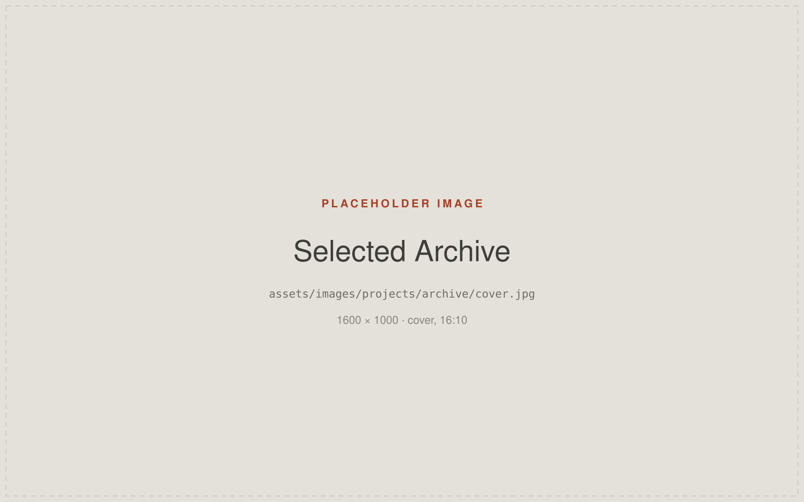
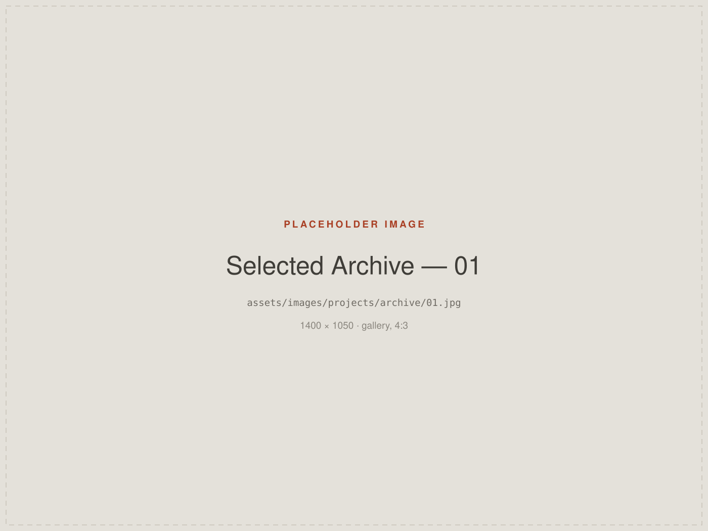
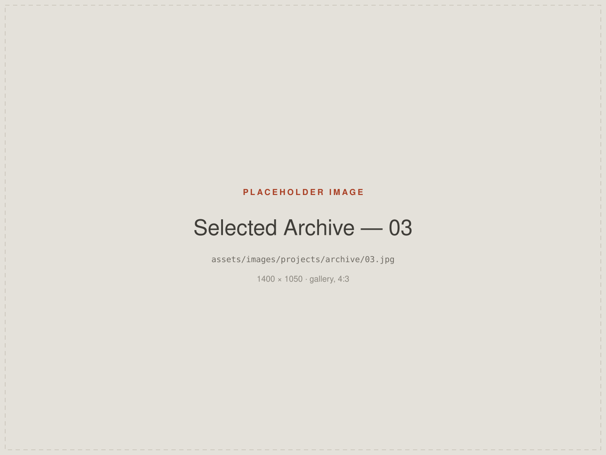

Websites, Digital Projects & Earlier Work
Selected earlier work across websites, digital projects, graphic design and social media — including work from Soch Business Mentors LLP.
- Role
- Graphic Designer & Social Media Manager
- Organisation
- Soch Business Mentors LLP
- Disciplines
- Web Design · Graphic Design · Social Media
- Nature of this page
- An archive rather than a single case study

Context
Before my current work, I spent time as a graphic designer and social media manager at Soch Business Mentors LLP, working across multiple website projects and digital initiatives.
This page exists because that range is part of how I work now. It is presented as an archive, not as a set of finished case studies — earlier work that shaped the approach rather than work I would lead with today.
Areas of work
- Graphic design
- Social media management and design
- Multiple website projects
- Digital initiatives
- NFT-related projects
Project names, clients and dates to be provided. Nothing here has been named or dated on your behalf.
Selected work
Placeholders below. Add only work you are comfortable showing
publicly, and check client permission where relevant — see
ASSETS.md.


A note on this archive
An archive is more useful when it is short. As newer work replaces it, this page is meant to shrink rather than grow — the point is to show range, not volume.